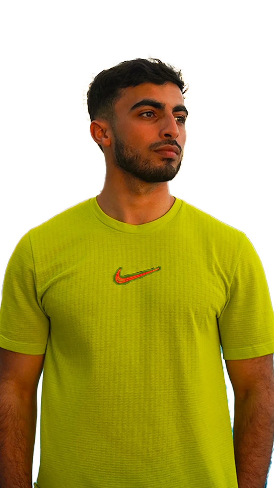
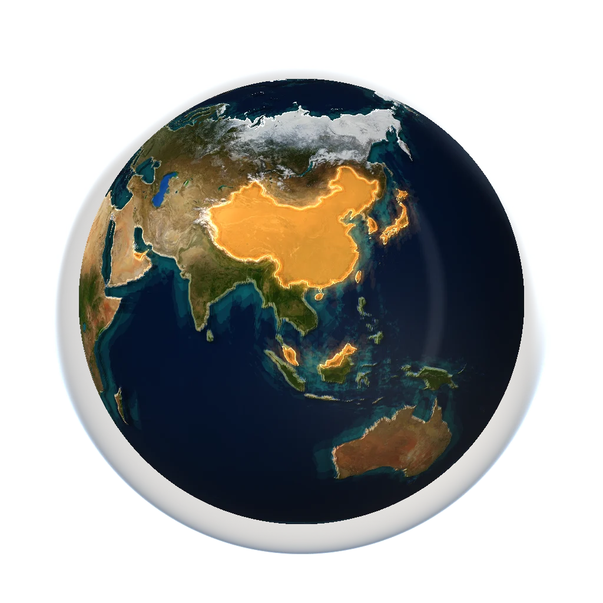
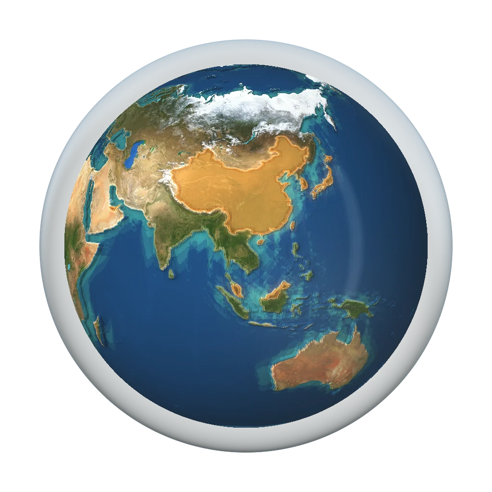
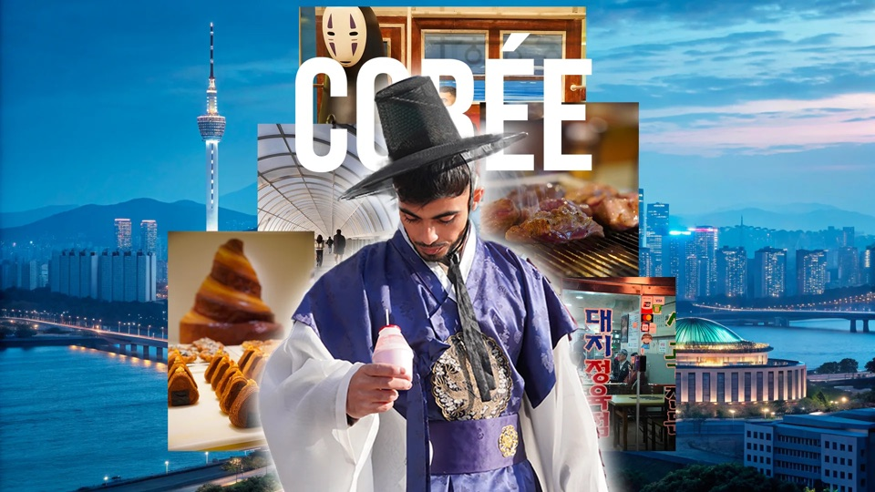

Kenz en Asie
Le voyage
L’Asie, et ce que ça coûte vraiment.
≈ 28 000 personnes me suivent sur TikTok.
Entrer dans mes voyagesJe voyage en Asie, je m’entraîne entre deux voyages, et je te raconte tout, vraiment.
Partir avec moi
9 pays filmés, dans l’ordre des séries.


日本
05/2024 → 06/2026
Débuts au Japon, puis Branche-toi Japon, saisons 1 et 2.

한국
12/2024 → 03/2025
Dans le bon en Corée.

05 → 06/2025
En Bien en Malaisie. Ma vidéo la plus vue : le budget.

中国
07/2025 → 02/2026
Branche-toi Chine, saisons 1 et 2 (Shenzhen, Guangzhou). La saison 2 est ma meilleure série.

香港
08/2025
Un hors-série.
26/08/2025
Un vlog.

12/2025
Abu Dhabi, une mini-série.
08/2026
09/2026
Un hors-série.
Prochaine escale
Branche-toi Île Maurice, en préparation.
Entrer dans mes voyagesk15ze · sport, nutrition, lifestyle
Deux univers. Choisis le tien.
Kenz en Asie
L’Asie, et ce que ça coûte vraiment.
≈ 28 000 personnes me suivent sur TikTok.
Entrer dans mes voyagesk15ze
En sèche, je mange plaisir et copieux : des recettes simples, aux doses exactes.
Ni coach, ni expert. Je partage ce qui marche pour moi.
Entrer dans le sport